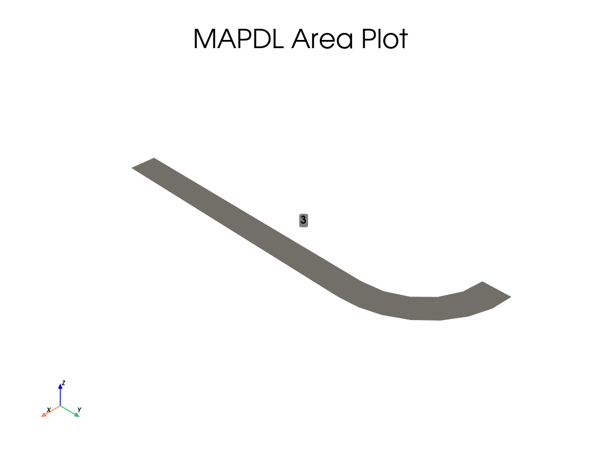
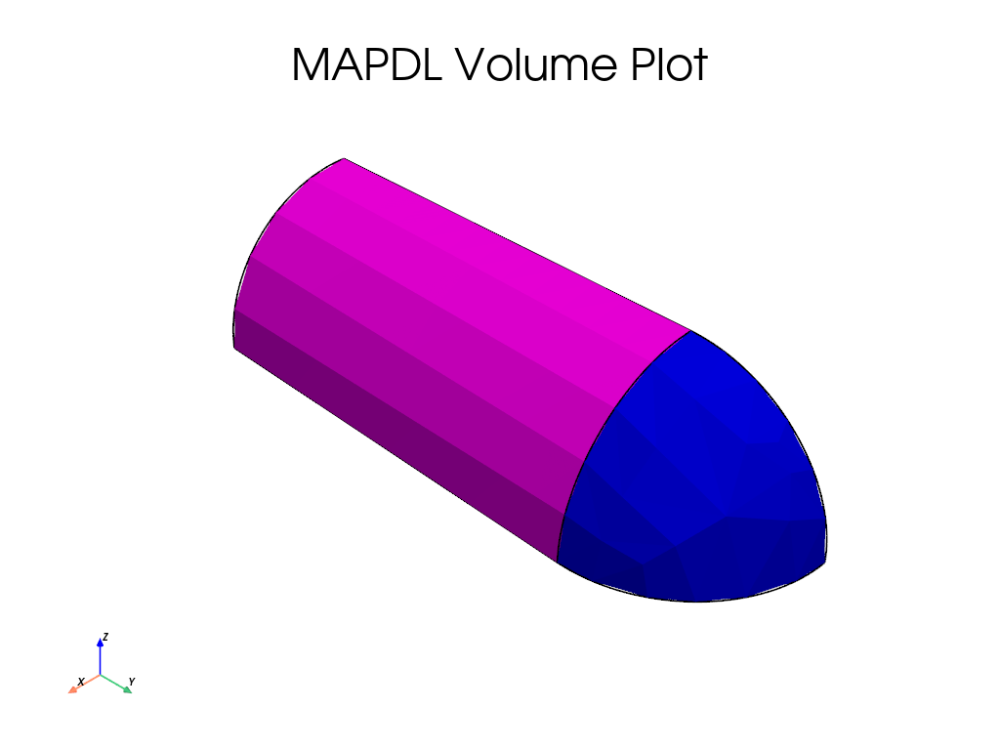
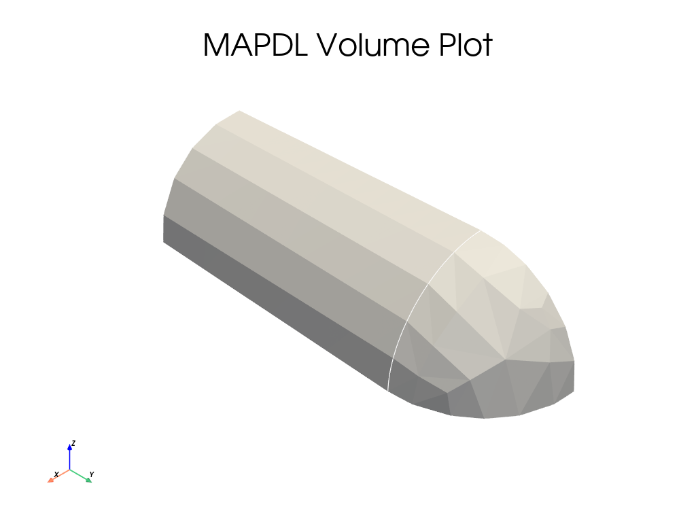

Note
Go to the end to download the full example code
压力容器#
本例演示如何创建一个基本压力容器并对其施加压力。
Also shown here:
从 MAPDL 获取应力结果的各种方法。
PRNSOL、VGET（更高效的封装）和传统读取器之间的比较。
使用 PRNSOL 时有关 FULL 图形与 POWER 图形的注意事项。
import numpy as np
from ansys.mapdl.core import launch_mapdl
# start mapdl, enter the preprocessor, and set the units
mapdl = launch_mapdl()
mapdl.clear()
mapdl.prep7()
# US Customary system using inches (in, lbf*s2/in, s, °F). 美国惯用制英寸（英寸，磅英尺*平方英寸，秒，°F）。
mapdl.units("BIN")
C:\Users\ff\AppData\Local\Programs\Python\Python310\lib\site-packages\ansys\tools\path\path.py:818: DeprecationWarning: This method is going to be deprecated in future versions. Please use 'get_mapdl_path'.
warnings.warn(
U.S. CUSTOMARY INCH UNITS SPECIFIED FOR INTERNAL
LENGTH = INCHES (IN)
MASS = LBF-S**2/IN
TIME = SECONDS (SEC)
TEMPERATURE = FAHRENHEIT
TOFFSET = 460.0
FORCE = LBF
HEAT = IN-LBF
PRESSURE = PSI (LBF/IN**2)
ENERGY = IN-LBF
POWER = IN-LBF/SEC
INPUT UNITS ARE ALSO SET TO BIN
设置材料和单元类型
mapdl.et(1, "SOLID285")
mapdl.mp("EX", 1, 10e6)
mapdl.mp("PRXY", 1, 0.3)
mapdl.mp("DENS", 1, 0.1)
print(mapdl.mplist())
LIST MATERIALS 1 TO 1 BY 1
PROPERTY= ALL
MATERIAL NUMBER 1
TEMP EX
0.1000000E+08
TEMP DENS
0.1000000
TEMP PRXY
0.3000000
创建几何图形
# area generation
height = 10
inner_width = 2.5
outer_width = 3.5
mapdl.rectng(inner_width, outer_width, 0, height)
mapdl.cyl4(0, height, inner_width, 0, outer_width, 90)
# combine areas
a_comb = mapdl.aadd(1, 2)
mapdl.aplot(color="grey", background="w", show_area_numbering=True)
# Generate a cylindrical volume by rotating an area pattern about an axis
mapdl.vrotat(a_comb, pax1=6, arc=90)
mapdl.vplot(background="w",show_volume_numbering=True)
- 
- 
- 
创建网格
mapdl.smrtsize(1)
mapdl.esize(0.25, 0)
mapdl.mshape(1, "3D")
mapdl.mshkey(0)
mapdl.vmesh("ALL")
mapdl.eplot(color="grey", background="w")
Solve
# 边界条件选择
mapdl.geometry.area_select([3, 5, 7])
mapdl.da("ALL", "SYMM")
mapdl.allsel()
# 施加压力
mapdl.geometry.area_select([1, 6])
mapdl.sfa("ALL", 1, "PRES", 1000)
mapdl.allsel()
# solver
mapdl.run("/SOL")
mapdl.antype(0)
mapdl.outres("ALL", "ALL")
mapdl.run("/STATUS,SOLU")
sol_output = mapdl.solve()
mapdl.finish()
FINISH SOLUTION PROCESSING
***** ROUTINE COMPLETED ***** CP = 1.875
Post-Processing#
输入 MAPDL 后处理命令 (/POST1) 并获取单一静态解的冯米斯应力。在这里，我们直接使用 MAPDL 来获取结果，使用 VGET 方法的包装器来高效的获取结果，而无需输出到磁盘。
# 进入后处理程序
mapdl.post1()
mapdl.set(1, 1)
# 直接来自 MAPDL 的 VGET 命令的结果
# VGET, __VAR__, NODE, , S, EQV
nnum = mapdl.mesh.nnum # Array of node numbers.
von_mises_mapdl = mapdl.post_processing.nodal_eqv_stress()
# 我们可以用以下方法打印出每个节点的解：
print(f"\nNode Stress (psi)")
for node_num, stress_value in zip(nnum[:5], von_mises_mapdl[:5]):
print(f"{node_num:<5d} {stress_value:.3f}")
print("...")
# 或直接获取最大应力值和相应的节点
idx = np.argmax(von_mises_mapdl)
node_num = nnum[idx]
stress_value = von_mises_mapdl[idx]
print(f"\nMaximum Stress")
print(f"Node Stress (psi)")
print(f"{node_num:<5d} {stress_value:.3f}")
Node Stress (psi)
1 3305.107
2 1895.056
3 1398.011
4 1372.698
5 867.279
...
Maximum Stress
Node Stress (psi)
1000 3477.022
Plot the results
mapdl.post_processing.plot_nodal_eqv_stress(cpos="zy")
我们也可以使用传统文件阅读器 ansys-mapdl-reader 直接访问结果文件，得到完全相同的结果。
# 访问结果
result = mapdl.result
# 获取冯米塞斯应力，并证明它等同于从 MAPDL 中获取的应力。
nnum, stress = result.principal_nodal_stress(0)
von_mises = stress[:, -1] # von-Mises 应力是最右边的一列
min_von_mises, max_von_mises = np.min(von_mises), np.max(von_mises)
print("All close:", np.allclose(von_mises, von_mises_mapdl))
All close: True
这些结果等同于 PRNSOL 的结果。
Note
使用 mapdl.graphics('POWER') 启用 POWER GRAPHICS 将改变平均后的结果。
mapdl.header("OFF", "OFF", "OFF", "OFF", "OFF", "OFF")
table = mapdl.prnsol("S", "PRIN").splitlines()[1:]
prnsol_eqv = np.genfromtxt(table)[:, -1] # eqv 是最后一列
# 显示这些数据是相等的（由于 PRNSOL 内的四舍五入，因此为 RTOL）
print("All close:", np.allclose(von_mises, prnsol_eqv, rtol=1e-4))
print(f"LEGACY Reader and MAPDL VGET Min: {min_von_mises}")
print(f"PRNSOL MAPDL Min: {prnsol_eqv.min()}")
print()
print(f"LEGACY Reader and MAPDL VGET Max: {max_von_mises}")
print(f"PRNSOL MAPDL Max: {prnsol_eqv.max()}")
All close: True
LEGACY Reader and MAPDL VGET Min: 716.7400209196994
PRNSOL MAPDL Min: 716.74
LEGACY Reader and MAPDL VGET Max: 3477.0215611712856
PRNSOL MAPDL Max: 3477.0
Stop mapdl#
mapdl.exit()
Total running time of the script: (0 minutes 8.876 seconds)